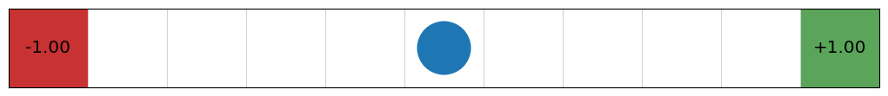
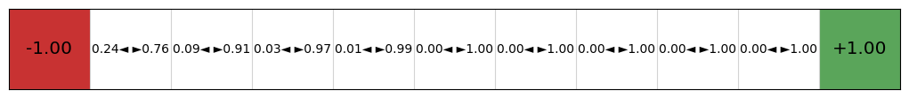
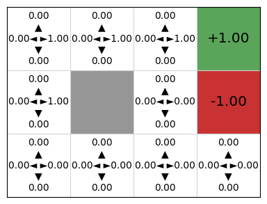
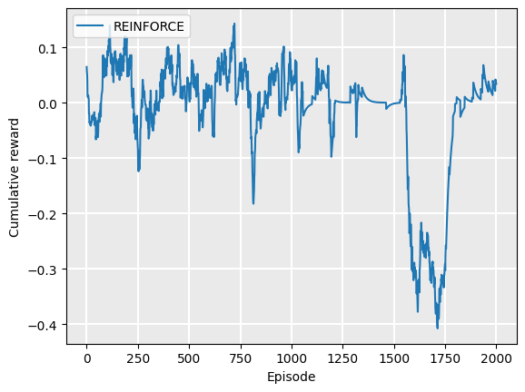
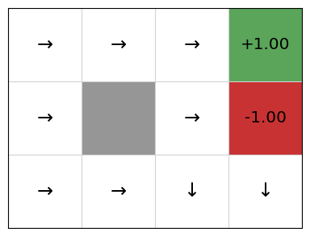

Policy gradients#
Learning outcomes
The learning outcomes of this chapter are:
Apply policy gradients and actor critic methods to solve small-scale MDP problems manually and program policy gradients and actor critic algorithms to solve medium-scale MDP problems automatically.
Compare and contrast policy-based reinforcement learning with value-based reinforcement learning.
Overview#
As noted earlier, policy-based methods search for a policy directly, rather than searching for a value function and extracting a policy. In this section, we look at a model-free method that optimises a policy directly. It is similar to Q-learning and SARSA, but instead of updating a Q-function, it updates the parameters \(\theta\) of a policy directly using gradient ascent.
In policy gradient methods, we approximate the policy from the rewards and actions received in our episodes, similar to the way we do it with Q-learning. We can do this provided that the policy has two properties:
The policy is represented using some function that is differentiable with respect to its parameters. For a non-differentiable policy, we cannot calculate the gradient.
Typically, we want the policy to be stochastic. Recall from the section on policies that a stochastic policy specifies a probability distribution over actions, defining the probability with which each action should be chosen.
The goal of a policy gradient is to approximate the optimal policy \(\pi_{\theta}(s, a)\) via gradient ascent on the expected return. Gradient ascent will find the best parameters \(\theta\) for the particular MDP.
Policy improvement using gradient ascent#
The goal of gradient ascent is to find weights of a policy function that maximises the expected return. This is done iteratively by calculating the gradient from some data and updating the weights of the policy.
The expected value of a policy \(\pi_{\theta}\) with parameters \(\theta\) is defined as:
where \(V^{\pi_{\theta}}\) is the policy evaluation using the policy \(\pi_{\theta}\) and \(s_0\) is the initial state. This expression is computationally expensive to calculate, because we need to execute every possible episode from \(s_0\) to every terminal state, which may be an infinite number of episodes. So, we use policy gradient algorithms to approximate this instead. These search for a local maximum in \(J(\theta)\) by ascending the gradient of the policy with respect to the parameters \(\theta\), using episodic samples.
Definition – Policy gradient
Given a policy objective \(J(\theta)\), the policy gradient of \(J\) with respect to \(\theta\), written \(\nabla_{\theta}J(\theta)\) is defined as:
where \(\frac{\partial J(\theta)}{\partial \theta_i}\) is the partial derivative of \(J\) with respective to \(\theta_i\).
If we want to follow the gradient towards the optimal \(J(\theta)\) for our problem, we use the gradient and update the weights:
where \(\alpha\) is a learning rate parameter that dictates how big the step in the direction of the gradient should be.
The question is: what is \(\nabla J(\theta)\)? The policy gradient theorem (see Sutton and Barto, Section 13.2) says that for any differentiable policy \(\pi_{\theta}\), state \(s\), and action \(a\), that \(\nabla J(\theta)\) is:
The expression \(\textrm{ln} \pi_{\theta}(s, a)\) tells us how to change the weights \(\theta\): increase the log probability of selecting action \(a\) in state \(s\). If the quality of selecting action \(a\) in \(s\) is positive, we would increase that probability; otherwise we decrease the probability. So, this is the expected return of taking action \(\pi_{\theta}(s,a)\) multiplied by the gradient.
In these notes, we will not go into details about gradients or algorithms for solving them – this is itself a large topic that is relevant outside of reinforcement learning. Instead, we will just give the intuition and how to use this for model-free reinforcement learning.
REINFORCE#
The REINFORCE algorithm is one algorithm for policy gradients. We cannot calculate the gradient optimally because this is too computationally expensive – we would need to solve for all possible trajectories in our model. In REINFORCE, we sample trajectories, similar to the sampling process in Monte-Carlo reinforcement learning.
![An abstract illustration of the policy gradient algorithm REINFORCE. There are three boxes: environment, update policy, and sample action. From sample action to environment is an arrow labelled with the letter a, representing the action being executed by the agent in the environment. From the environment back to select action is an arrow labelled s-prime. This indicates the REINFORCE iteratively selects and executes actions. From environment, there are two arrows labelled r and s, each with short arrows above them illustrating that these are lists or vectors of rewards and states. The arrow is also labelled terminated episode, indicating that when an episode terminates, the list of rewards and states are given to the agent, which uses them to update the policy.](../_images/policy_gradient_loop.png)
Fig. 12 An abstraction illustration of the policy gradient algorithm REINFORCE.#
Fig. 12 gives an abstract overview of REINFORCE. The algorithm iteratively generates new actions by sampling from its policy and executes these. Once an episode terminates, a list of the rewards and states is used to update the policy, showing that the policy is only updated at the end of each episode.
Algorithm 12 (REINFORCE)
\( \begin{array}{l} \alginput:\ \text{A differentiable policy}\ \pi_{\theta}(s,a),\ \text{an MDP}\ M = \langle S, s_0, A, P_a(s' \mid s), r(s,a,s')\rangle\\ \algoutput:\ \text{Policy}\ \pi_{\theta}(s,a)\\[2mm] \text{Initialise parameters}\ \theta\ \text{arbitrarily}\\[2mm] \algrepeat\ \text{(for each episode}\ e \text{)}\\ \quad\quad \text{Generate episode}\ (s_0, a_0, r_1, \ldots s_{T-1}, a_{T-1}, r_{T})\ \text{by following}\ \pi_{\theta}\\ \quad\quad \algforeach\ (s_t, a_t)\ \text{in the episode}\\ \quad\quad\quad\quad G \leftarrow \sum_{k=t+1}^{T} \gamma^{k-t-1} r_k\\ \quad\quad\quad\quad \theta \leftarrow \theta + \alpha \gamma^{t} G\ \nabla\ \textrm{ln}\ \pi_{\theta}(s,a)\\ \alguntil\ \pi_{\theta}\ \text{converges} \end{array} \)
REINFORCE generates an entire episode using Monte-Carlo simulation by following the policy so far by sampling actions using the stochastic policy \(\pi_{\theta}\). It samples actions because on their probabilities; that is, \(a \sim \pi_{\theta}(s,a)\).
It then steps through each action in the episode, a calculates \(G\), the total future discounted reward of the trajectory. Using this reward, it calculates the gradient \(\pi\) and multiples this in the direction of \(G\). Therefore, it generates better and better policies as \(\pi\) is improved.
Comparing to value-based techniques, we can see that REINFORCE (and other policy-gradient approaches) do not evaluate each action in the policy improvement process. In policy iteration, we update the policy \(\pi(s) \leftarrow \textrm{argmax}_{a \in A(s)} Q^\pi(s,a)\). In REINFORCE, the most recently sampled action and its reward are used to calculate the gradient and update.
This has the advantage that policy-gradient approaches can be applied when the action space or state space are continuous; e.g. there are one or more actions with a parameter that takes a continuous value. This is because it uses the gradient instead of doing the policy improvement explicitly. For the same reason, policy-gradient approaches are often more efficient than value-based approaches when there are a large number of actions.
Note
From the algorithm above, we can see that REINFORCE is an on policy approach. The sample trajectories from directly from \(\pi_{\theta}\) and the update happens
Implementation: Logistic regression-based REINFORCE#
The implementation of REINFORCE takes a policy, but this policy must be differentiable. As such, we cannot use the tabular policy used in policy iteration. As we can see, unlike Q-learning and SARSA, the update happens only at the end of each episode.
from itertools import count
from mastering_rl.learners.model_free_learner import ModelFreeLearner
class REINFORCE(ModelFreeLearner):
def __init__(self, mdp, policy) -> None:
super().__init__()
self.mdp = mdp
self.policy = policy
""" Generate and store an entire episode trajectory to use to update the policy """
def execute(self, episodes=100, max_episode_length=100):
episode_rewards = []
for episode in range(episodes):
actions = []
states = []
rewards = []
state = self.mdp.get_initial_state()
episode_reward = 0.0
for step in count():
action = self.policy.select_action(state, self.mdp.get_actions(state))
(next_state, reward, done) = self.mdp.execute(state, action)
# Store the information from this step of the trajectory
states.append(state)
actions.append(action)
rewards.append(reward)
state = next_state
episode_reward += reward * (self.mdp.get_discount_factor() ** step)
if done or step == max_episode_length - 1:
break
deltas = self.calculate_deltas(rewards)
self.policy.update(states, actions, deltas)
episode_rewards.append(episode_reward)
return episode_rewards
def reset(self):
self.policy.reset()
def calculate_deltas(self, rewards):
G = []
G_t = 0
for r in reversed(rewards):
G_t = r + self.mdp.get_discount_factor() * G_t
G.insert(0, G_t)
return G
We need a differentiable policy so that we can calculate the gradient and update. To illustrate this from first principles, let’s look at an implementation of a policy that uses logistic regression. This basic implementation supports environments with only two actions, but it is sufficient to illustrate the basics of policy gradient methods from first principles.
Because we use logistic regression to represent the policy in this simplified implementation that allows only two actions, the probability for each action (and therefore the policy) can be calculated as follows:
This gives us the probability of choosing actions \(a_0\) and \(a_1\) in state \(s\), which approximates the expression \(\pi_{\theta}(s, a) Q(s,a)\) in the policy gradient theorem.
Since the policy follows a sigmoid function, we can use the following result from calculus to find the derivative. If \(\sigma(x)\) is a sigmoid, then the derivative of \(\sigma(x)\) with respect to \(x\) conforms to the following pattern:
Using this result, we can then find \(\nabla \textrm{ln} \pi(s, a)\):
This gives us a vector of the partial derivatives, which the update method then uses to update the corresponding \(\theta_i\) value.
Let’s implement this.
The policy inherits from StochasticPolicy, which means that the policy is a stochastic policy \(\pi_{\theta}(s,a)\) that returns the probability of action \(a\) being executed in state \(s\). The select_action is stochastic, as can be seen below – it selects between the two actions using the policies probability distribution.
import math
import random
import json
from mastering_rl.policies.policy import StochasticPolicy
""" A two-action policy implemented using logistic regression from first principles """
class LogisticRegressionPolicy(StochasticPolicy):
"""Create a new policy, with given parameters theta (randomly if theta is None)"""
def __init__(self, actions, num_params, alpha=0.1, theta=None):
assert len(actions) == 2
self.actions = actions
self.alpha = alpha
if theta is None:
theta = [0.0 for _ in range(num_params)]
self.theta = theta
self.stochastic = True
""" Select one of the two actions using the logistic function for the given state """
def select_action(self, state, actions):
# Get the probability of selecting the first action
probability = self.get_probability(state, self.actions[0])
if self.stochastic:
# With a probability of 'probability' take the first action
if random.random() < probability:
return self.actions[0]
return self.actions[1]
else:
if probability >= 0.5:
return self.actions[0]
return self.actions[1]
""" Update our policy parameters according using the gradient descent formula:
theta <- theta + alpha * G * nabla J(theta),
where G is the future discounted reward
"""
def update(self, states, actions, deltas):
for t in range(len(states)):
gradient_log_pi = self.gradient_log_pi(states[t], actions[t])
# Update each parameter
for i in range(len(self.theta)):
self.theta[i] += self.alpha * deltas[t] * gradient_log_pi[i]
""" Get the probability of applying an action in a state """
def get_probability(self, state, action):
# Calculate y as the linearly weight product of the
# policy parameters (theta) and the state
y = self.dot_product(state, self.theta)
# Pass y through the logistic regression function to convert it to a probability
probability = self.logistic_function(y)
if action == self.actions[0]:
return probability
return 1 - probability
def reset(self):
theta = [0.0 for _ in range(len(self.theta))]
""" Computes the gradient of the log of the policy (pi),
which is needed to get the gradient of the objective (J).
Because the policy is a logistic regression, using the policy parameters (theta).
pi(actions[0] | state)= 1 / (1 + e^(-theta * state))
pi(actions[1] | state) = 1 / (1 + e^(theta * state))
When we apply a logarithmic transformation and take the gradient we end up with:
grad_log_pi(left | state) = state - state * pi(left | state)
grad_log_pi(right | state) = -state * pi(left | state)
"""
def gradient_log_pi(self, state, action):
y = self.dot_product(state, self.theta)
if action == self.actions[0]:
return [s_i - s_i * self.logistic_function(y) for s_i in state]
return [-s_i * self.logistic_function(y) for s_i in state]
def reset(self):
self.theta = [0.0 for _ in range(len(self.theta))]
def save(self, filename):
with open(filename, 'w') as f:
json.dump({'alpha': self.alpha, 'weights': self.weights}, f)
@classmethod
def load(cls, features, filename):
with open(filename, 'r') as f:
data = json.load(f)
return cls(features, alpha=data['alpha'], weights=data['weights'])
""" Standard logistic function """
@staticmethod
def logistic_function(y):
return 1 / (1 + math.exp(-y))
""" Compute the dot product between two vectors """
@staticmethod
def dot_product(vec1, vec2):
return sum([v1 * v2 for v1, v2 in zip(vec1, vec2)])
The update method, as well as the gradient_log_pi method that it calls, are where the policy gradient theorem is applied. In update, for every state-action transition in the trajectory, we calculate the gradient and then update the parameters \(\theta\) using the corresponding partial derivative.
Let’s try this implementation on an example using the REINFORCE algorithm and our logistic regression policy. Because our logistic regression policy supports only two actions, we cannot use the 4x3 GridWorld example, so we instead use an even simpler example (who thought that would be possible!) of a GridWorld that is 11x1 and has a -1 reward at one end and a +1 reward at the other:
from mastering_rl.learners.reinforce import REINFORCE
from mastering_rl.markov_decision_processes.gridworld import GridWorld
from mastering_rl.policies.logistic_regression_policy import LogisticRegressionPolicy
gridworld = GridWorld(
height=1, width=11, initial_state=(5, 0), goals=[((0, 0), -1), ((10, 0), 1)]
)
gridworld_image = gridworld.visualise()

Next, we create a LogisticRegressionPolicy with just two actions, left and right, and with two parameters corresponding to the \(x\) and \(y\) coordinates. This is used in a REINFORCE instance to produce the following policy:
policy = LogisticRegressionPolicy(
actions=[GridWorld.LEFT, GridWorld.RIGHT],
num_params=len(gridworld.get_initial_state()),
)
policy_gradient = REINFORCE(gridworld, policy)
policy_gradient.execute(episodes=100)
policy_image = gridworld.visualise_stochastic_policy(policy)

We can see here that this is a stochastic policy — instead of giving us an action (left or right) in each cell, we get the probability that the policy will select each of these actions. The policy learns to select right with a much higher probability because the positive reward is to the right.
To follow the policy, we can use this deterministically by simply selecting the action with the highest probability, but in some applications, the optimal behaviour is to select an action by sampling from the probability distribution.
The difference between value-based methods such as Q-learning and SARSA is demonstrated by the output: there is just a policy and no value function or Q-function because the policy is learnt directly.
If we step through the policy during training, we can see the gradient updates performing their role in policy improvement:

This policy only considers two actions, but it can be easily extended to support multiple actions using standard machine learning techniques like one-vs-rest classification.
Implementation: Deep REINFORCE#
Just like we can use deep neural networks to approximate Q-functions in deep Q learning, we can use deep neural networks to approximate policies. Neural networks are differentiable, so these can be used in policy gradient algorithms such as REINFORCE — the policy parameters \(\theta\) are the parameters to the neural network.
As with deep Q learning, this has the advantage that features of the problem are learnt, features do not have to be independent, therefore supporting a larger set of problems compared to a logistic regression approach, and we can use unstructured data as input, such as images and videos.
To implement a deep policy gradient approach in REINFORCE, we just have to implement a new policy that uses a deep neural network.
In our implementation, we again use the PyTorch deep learning framework (https://pytorch.org/).
The policy uses a three layer network with the following:
The first layer takes the state vector, so the input features are the features of the state. In the case of the GridWorld example, this would be just the x- and y-coordinates of the agent.
We have a hidden layer, with a default number of 64 hidden dimensions, but this is parameterised by the variable
hidden_dimin the__init__constructor.The third and final layer is the output layer, which returns a categorical distribution with a dimensionality the same size as the action space, so that each action is associated with a probability of being selected.
We use a non-linear ReLU (rectified linear unit) between layers.
Recall from the section on deep Q learning that the Linear layers are dense layers in PyTorch.
It inherits from the StochasticPolicy and then implement the update, select_action, and get_probability methods. These take advantage of optimisations with the PyTorch framework, so the calculation of the gradient is ‘hidden’ by the PyTorch library. The line self.optimiser.zero_grad() then ‘zeros’ out the existing gradient so that the new gradient can be calculated. The gradient is calculated using loss.backwards(). Then self.optimiser.step() adjusts the parameters \(\theta\) in the direction of the gradient:
import torch
import torch.nn as nn
import torch.nn.functional as F
from torch.distributions.categorical import Categorical
from torch.optim import Adam
from mastering_rl.policies.policy import StochasticPolicy
class DeepNeuralNetworkPolicy(StochasticPolicy):
"""
An implementation of a policy that uses a PyTorch (https://pytorch.org/)
deep neural network to represent the underlying policy.
"""
def __init__(
self, state_space, action_space, hidden_dim=128, alpha=0.001, stochastic=True
):
self.state_space = state_space
self.action_space = action_space
# Define the policy structure as a sequential neural network.
self.policy_network = nn.Sequential(
nn.Linear(in_features=self.state_space, out_features=hidden_dim),
nn.ReLU(),
nn.Linear(in_features=hidden_dim, out_features=hidden_dim),
nn.ReLU(),
nn.Linear(in_features=hidden_dim, out_features=self.action_space),
)
# Initialize weights using Xavier initialization and biases to zero
self._initialize_weights()
# The optimiser for the policy network, used to update policy weights
self.optimiser = Adam(self.policy_network.parameters(), lr=alpha)
# Whether to select an action stochastically or deterministically
self.stochastic = stochastic
def _initialize_weights(self):
for layer in self.policy_network:
if isinstance(layer, nn.Linear):
nn.init.xavier_uniform_(layer.weight)
nn.init.zeros_(layer.bias)
""" Select an action using a forward pass through the network """
def select_action(self, state, actions):
state = torch.as_tensor(state, dtype=torch.float32)
with torch.no_grad():
action_logits = self.policy_network(state)
masked_logits = self._mask_logits(action_logits, actions)
if self.stochastic:
# Sample an action according to the probability distribution
dist = Categorical(logits=masked_logits)
action = dist.sample()
else:
# Choose the action with the highest probability
action = torch.argmax(masked_logits)
return action.item()
""" Get the probability of an action being selected in a state """
def get_probability(self, state, action):
state = torch.as_tensor(state, dtype=torch.float32)
with torch.no_grad():
action_logits = self.policy_network(state)
# A softmax layer turns action logits into relative probabilities
probabilities = F.softmax(input=action_logits, dim=-1).tolist()
# Convert from a tensor encoding back to the action space
return probabilities[action]
def _mask_logits(self, action_logits, actions):
mask = torch.full_like(action_logits, float("-inf"))
mask[actions] = 0
return action_logits + mask
def evaluate_actions(self, states, actions, action_spaces=None):
action_logits = self.policy_network(states)
if action_spaces is not None:
masked_logits = []
for logits, valid_actions in zip(action_logits, action_spaces):
masked_logits.append(self._mask_logits(logits, valid_actions))
action_logits = torch.stack(masked_logits)
action_distribution = Categorical(logits=action_logits)
log_prob = action_distribution.log_prob(actions)
return log_prob
def update(self, states, actions, deltas, action_spaces=None, entropy_coeff=0.01):
deltas_tensor = torch.as_tensor(deltas, dtype=torch.float32).view(-1)
states_tensor = torch.as_tensor(states, dtype=torch.float32)
actions_tensor = torch.as_tensor(actions, dtype=torch.long).view(-1)
if deltas_tensor.numel() > 1:
deltas_tensor = (deltas_tensor - deltas_tensor.mean()) / (
deltas_tensor.std(unbiased=False) + 1e-8
)
deltas_tensor = torch.clamp(deltas_tensor, min=-10.0, max=10.0)
# Single forward pass for both log-prob and entropy
action_logits = self.policy_network(states_tensor)
if action_spaces is not None:
masked_logits = []
for logits, valid_actions in zip(action_logits, action_spaces):
masked_logits.append(self._mask_logits(logits, valid_actions))
action_logits = torch.stack(masked_logits)
dist = Categorical(logits=action_logits)
action_log_probs = dist.log_prob(actions_tensor)
entropy = dist.entropy().mean()
loss = -(action_log_probs * deltas_tensor.detach()).mean() - entropy_coeff * entropy
self.optimiser.zero_grad()
loss.backward()
torch.nn.utils.clip_grad_norm_(self.policy_network.parameters(), max_norm=1.0)
self.optimiser.step()
return loss
def set_stochastic(self, stochastic):
self.stochastic = stochastic
def reset(self):
self._initialize_weights()
def save(self, filename):
torch.save({
'state_space': self.state_space,
'action_space': self.action_space,
'state_dict': self.policy_network.state_dict(),
}, filename)
@classmethod
def load(cls, filename):
checkpoint = torch.load(filename)
policy = cls(checkpoint['state_space'], checkpoint['action_space'])
policy.policy_network.load_state_dict(checkpoint['state_dict'])
return policy
As with the deep Q learning implementation, PyTorch does not support strings as values, so we need to encode action names and states as integers.
We can now use this implementation by creating a REINFORCE agent with a DeepNeuralNetworkPolicy instance as the policy, and use it to learn a policy for the GridWorld example:
from mastering_rl.learners.reinforce import REINFORCE
from mastering_rl.markov_decision_processes.gridworld import GridWorld
from mastering_rl.policies.deep_nn_policy import DeepNeuralNetworkPolicy
from mastering_rl.tests.plot import Plot
gridworld = GridWorld()
state_space = len(gridworld.get_initial_state())
action_space = len(gridworld.get_actions())
policy = DeepNeuralNetworkPolicy(state_space, action_space)
rewards = REINFORCE(gridworld, policy).execute(episodes=2000, max_episode_length=100)
gridworld_image = gridworld.visualise_stochastic_policy(policy)
Plot.plot_cumulative_rewards(["REINFORCE"], [rewards], smoothing_factor=0.95)
gridworld.visualise_policy(policy)



Again, we can see that this policy is stochastic: each action has a probability of being executed in a state.
Simulating the process of training the policy, we can see that initially, all four actions have (approximately) the same probability of being executed, but deep REINFORCE learns a good Q-function and therefore policy:

Advantages and disadvantages of policy gradients (compared to value-based techniques)#
Advantages#
High-dimensional problems: The major advantage of policy-gradient approaches compared to value-based techniques like Q-learning and SARSA is that they can handle high-dimensional action and state spaces, including actions and states that are continuous. This is because we do not have to iterate over all actions using \(\textrm{argmax}_{a \in A(s)}\) as we do in value-based approaches. For continuous problems, \(\textrm{argmax}_{a \in A(s)}\) is not possible to calculate, while for a high number of actions, the computational complexity is dependent on the number of actions.
Disadvantages#
Sample inefficiency: Since the policy gradients algorithm takes an entire episode to do the update, it is difficult to determine which of the state-action pairs are those that effect the value \(G\) (the episode reward), and therefore which to sample.
Loss of explainability: Model-free reinforcement learning is a particularly challenging case to understand and explain why a policy is making a decision. This is largely due to the model-free property: there are no action definitions that can used as these are unknown. However, policy gradients are particularly difficult because the values of states are unknown: we just have a resulting policy. With value-based approaches, knowing \(V\) or \(Q\) provides some insight into why actions are chosen by a policy; although explainability problems still remain.
Takeaways#
Takeaways
Policy gradient methods such as REINFORCE directly learn a policy instead of first learning a value function or Q-function.
Using trajectories, the parameters for a policy are updated by following the gradient upwards – the same as gradient descent but in the opposite direction.
Unlike policy iteration, policy gradient approaches are model free.